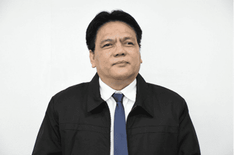
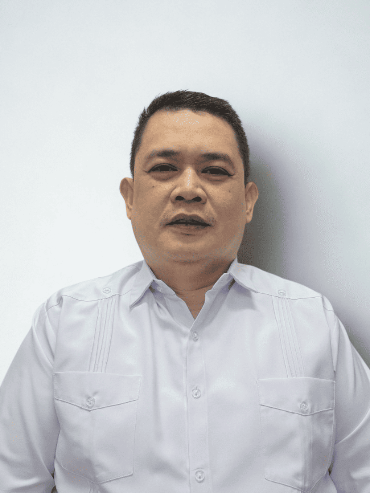

Forms
From Last Year's Highlights
Program Schedule
- 7:30 AM Registration
- 8:00 AM Opening Session
- 8:10 AM National Anthem
- 8:15 AM Opening Message
- 8:20 AM Overview of the 12th M&E Network Forum, House Rules
- 8:25 AM Plenary 1: To Retain, Redesign, or Retrench? The Evolving Role of M&E in Planning and Budget Management
- 9:45 AM Exhibit Booth and AM Snacks
- 10:05 AM Breakout 1: From Proof to Progress: Using M&E Insights for Policy Action
- A. Health
- B. Labor and Employment
- C. Agriculture and Livelihood
- 11:25 AM Lunch Break
- 12:45 PM Breakout 2: Lost in Translation: Challenges in Bridging Data and Decision-Making in Government
- A. Use, Misuse, and Non-use: The Utility of Government M&E Systems
- B. Getting the Message Across: How Civil Society Uses M&E to Drive Reform
- C. Built-in, Not Added-on: Embedding M&E at the Core of Project Implementation
- 2:05 PM Plenary 2: Making Headway at the Halftime: Advancing SDG and PDP Goals Through Smart Prioritization
- 3:25 PM Closing Remarks
- 3:35 PM Photo-op, Final Reminders
- 3:45 PM PM Snacks and Socials
Resource Persons
Arsenio M. Balisacan, PhD
Department of Economy, Planning, and Development
Joseph J. Capuno, PhD
Department of Economy, Planning, and Development
Mary Joy O. De Leon
Department of Budget and Management
Ashish Narain, PhD
Asian Development Bank
Bienvenido Oplas, Jr.
Minimal Government Thinkers, Inc.

Karl Robert L. Jandoc, PhD
Moderator, University of the Philippines
Health
-
Process Evaluation of the Implementation of Telemedicine
Marites M. Tiongco, PhD
De La Salle University
-
Process Evaluation of the Implementation of Telemedicine
Bernardo Cielo II, MPP
De La Salle University
-
Evaluation of the Universal Health Care - Health Information Systems
Catherine C. Romero, MHA, MSPH
University of the Philippines
-
Lindsley Jeremiah Villarante, RN, MPH
Reactor, Department of Health
-
Edgardo S. Aranjuez II
Moderator, Department of Economy, Planning, and Development
Labor and Employment
-

Impact Evaluation of the DOLE Integrated Livelihood Program (DILP)
Ernesto O. Brown, PhD
Asian Social Project Services, Inc.
-

Quasi-Experimental Impact Evaluation of the TUPAD Program
Anthony Lawrence Borja, PhD
De La Salle University
-
Quasi-Experimental Impact Evaluation of the TUPAD Program
Ma. Ella Oplas
De La Salle University
-
Leilani M. Reynoso
Reactor, Department of Labor and Employment
-
Rachelle Angela C. Ramos
Moderator, Department of Economy, Planning, and Development
Agriculture and Livelihood
-
Process Evaluation of the KADIWA ni Ani at Kita Program
Arlene Inocencio, PhD
De La Salle University
-
Combining Cash Grants with an Ultra-Poor Livelihoods Training Program
Jed Asiaii Dimaisip-Nabuab
Innovations for Poverty Action
-
Anne Gilica DC. Santos
Reactor, Department of Agriculture
-
Ronaldo S. Caddarao
Reactor, Department of Agriculture
-
Mae Acebedo-Vargas
Reactor, International Care Ministries
-
Alellie B. Sobreviñas, PhD
Moderator, De La Salle University
Use, Misuse, and Non-use: The Utility of Government M&E Systems
-
Claire Dennis S. Mapa, PhD
Philippine Statistics Authority
-
Catherine Ann L. Gaurana, EnP
Local Government of San Lorenzo, Guimaras
-
Jaypee Kein G. Entredicho
Provincial Government of Guimaras
-
Stephanie F. Christiansen
Department of Economy, Planning, and Development - Region I
-
Mylah Faye Aurora B. Cariño
Department of Economy, Planning, and Development - Region X
-

Dennis M. Albano
Department of Transportation
-
Atty. Melanie A. Quilantang
Department of Budget and Management
-
Nerrisa T. Esguerra
Moderator, Department of Economy, Planning, and Development - Region III
Getting the Message Across: How Civil Society Uses M&E to Drive Reform
-
Joy Aceron
Government-Watch
-
Jessica Reyes-Cantos
Action for Economic Reforms
-

Karisha Anne Cruz
Innovations for Poverty Action
-
Wilford Will L. Wong
Department of Budget and Management
-
Vivien Suerte-Cortez
Moderator, United Nations Development Programme
Built-in, Not Added-on: Embedding M&E at the Core of Project Implementation
-
Philippine Multisectoral Nutrition Project
Rafael Jairah Jr. D. Matoy, RN, MPH
Department of Health
-
Water Supply and Sanitation Projects
Russell H. Adalla
Department of the Interior and Local Government
-
Executive Order No. 138, s. 2021 - Full Devolution
John Aries S. Macaspac
Department of Budget and Management
-
Paul Andrew M. Tatlonghari
Moderator, Department of Economy, Planning, and Development
Saleema Razvi, PhD
Presenter & Panelist, Copenhagen Consensus Center
Roland Mathiasson
Panelist, Copenhagen Consensus Center
Karl Robert L. Jandoc, PhD
Panelist, University of the Philippines
Toby Melissa C. Monsod, PhD
Panelist, University of the Philippines
Zhigang Li, PhD
Panelist, Asian Development Bank
Joseph J. Capuno, PhD
Moderator, Department of Economy, Planning, and Development
Roderick M. Planta
Department of Economy, Planning, and Development
Event Materials